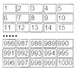

Ejercicio 3.1.
Realiza una calculadora que pida dos números y la operación y luego muestre el resultado. Las operaciones se tienen que invocar a funciones.
Realiza una calculadora que pida dos números y la operación y luego muestre el resultado. Las operaciones se tienen que invocar a funciones.
Escribe un programa que calcule el salario semanal de un trabajador en base a las horas trabajadas sabiendo que se pagan 12 euros por hora. Crear una función que calcule el salario y el programa llamará a esa función.
Escribe un programa que pida en un formulario un día de la semana y devuelva qué asignatura toca a primera hora ese día.
Realiza un programa que pida una hora por formulario y que muestre luego buenos días, buenas tardes o buenas noches según la hora. Se utilizarán los tramos de 6 a 12, de 13 a 20 y de 21 a 5. respectivamente. Sólo se tienen en cuenta las horas, los minutos no se deben introducir.
Vamos a ampliar el ejercicio 3.2. para considerar las horas extras. Escribe un programa que calcule el salario semanal de un trabajador teniendo en cuenta que las horas ordinarias (40 primeras horas de trabajo) se pagan a 12 euros la hora. A partir de la hora 41, se pagan a 16 euros la hora.
Realiza un programa que resuelva una ecuación de primer grado (del tipo ax + b = 0).
Realiza un programa que calcule la media de tres notas y muestre tanto la nota numérica como que diga la nota del boletín (insuficiente < 5, suficiente < 6, bien < 7, notable < 9 o sobresaliente < 10).
Escribe un programa que dada una hora determinada (horas y minutos), calcule los segundos que faltan para llegar a la medianoche.
Escribe un programa que ordene tres números enteros introducidos por formulario.
Realiza un programa que diga si un número introducido por formulario es par y/o divisible entre 5.
Escribe un programa que diga cuál es la primera y la última cifra de un número entero introducido por teclado. Se permiten números de hasta 5 cifras.
Realiza el control de acceso a una caja fuerte. La combinación será un número de 4 cifras. El programa nos pedirá la combinación para abrirla. Si no acertamos, se nos mostrará el mensaje “Lo siento, esa no es la combinación” y si acertamos se nos dirá “La caja fuerte se ha abierto satisfactoriamente”. Tendremos cuatro oportunidades para abrir la caja fuerte.
Escribe un programa que calcule la media de un conjunto de números positivos introducidos por teclado. A priori, el programa no sabe cuántos números se introducirán. El usuario indicará que ha terminado de introducir los datos cuando meta un número negativo.
Escribe un programa que muestre los n primeros términos de la serie de Fibonacci. El primer término de la serie de Fibonacci es 0, el segundo es 1 y el resto se calcula sumando los dos anteriores, por lo que tendríamos que los términos son 0, 1, 1, 2, 3, 5, 8, 13, 21, 34, 55, 89, 144... El número n se debe introducir por teclado.
Escribe un programa que lea una lista de diez números y determine cuántos son positivos, y cuántos son negativos.
Escribe un programa que diga si un número introducido por formulario es o no primo. Un número primo es aquel que sólo es divisible entre él mismo y la unidad. Crea la función es_primo para realizar el cálculo.
Realiza un programa que pinte una pirámide por pantalla. La altura se debe pedir por teclado mediante un formulario. La pirámide estará hecha de bolitas, ladrillos o cualquier otra imagen de las 5 que se deben dar a elegir mediante un formulario.
Escribe un programa que permita ir introduciendo una serie indeterminada de números hasta que la suma de ellos supere el valor 10000. Cuando esto último ocurra, se debe mostrar el total acumulado, el contador de los números introducidos y la media.
Escribe un programa que calcule el factorial de un número entero leído por teclado. Hacer una función recursiva.
Hacer un programa que calcule potencias de números. Escribe una función para calcular potencias que reciba como argumentos la base y el exponente, que es opcional y tiene valor por defecto 2 (elevar al cuadrado).
Define tres arrays de 20 números enteros cada una, con nombres “numero”, “cuadrado” y “cubo”. Carga el array “numero” con valores aleatorios entre 0 y 100. En el array “cuadrado” se deben almacenar los cuadrados de los valores que hay en el array “numero”. En el array “cubo” se deben almacenar los cubos de los valores que hay en “numero”. A continuación, muestra el contenido de los tres arrays dispuesto en tres columnas.
Escribe un programa que pida 10 números por teclado y que luego muestre los números introducidos junto con las palabras “máximo” y “mínimo” al lado del máximo y del mínimo respectivamente.
Escribe un programa que genere 20 números enteros aleatorios entre 0 y 100 y que los almacene en un array. El programa debe ser capaz de pasar todos los números pares a las primeras posiciones del array (del 0 en adelante) y todos los números impares a las celdas restantes. Utiliza arrays auxiliares si es necesario.
Crea un a página PHP que muestre de forma aleatoria dos imágenes. Es decir,se muestra una u otra de forma aleatoria e impredecible.
Crea un formulario que lea el nombre, los apellidos, el salario (número con decimales) y la edad de una persona (un número). Recoge los datos y con ellos calcula un nuevo salario para esa persona en base a esta situación:
Crea un formulario que lea un número, después un mensaje nos indicará si era realmente o no un número y, si es un número, si tenía decimales.
Crea una página PHP que ponga de fondo un color aleatorio. Para ello recuerda que en CSS el color de fondo se puede realizar mediante la función rgb a la que se le pasan tres números del 0 al 255, el primero es el nivel de rojo, el segundo el de verde y el tercero el de azul
Crea un formulario que pida dos números. Ambos tienen que valer 1 o más, de no ser así se indica el error. El resultado será una tabla (se mostrará en la misma página del formulario) con el tamaño indicado
Crea una página PHP que muestre los números del 1 al 1000 pero de forma que aparezcan en 5 columnas y se lean de izquierda a derecha. Ejemplo de resultado (se muestran las primeras y las últimas filas)

Crea un formulario que pida al usuario un número.
Después, en otra página, recoge ese número y muestra la suma de todos los números pares anteriores a él.
Por ejemplo, si el usuario escribe el número 9 saldría por pantalla el número 20, resultado de sumar 2 + 4 + 6 + 8
Mejorar el resultado para que la página que muestra la suma, después muestre un enlace con el que regresar al formulario de modo que, al hacer clic en él, el cuadro de entrada del número muestre el último número introducido
Crear una página PHP que muestre por pantalla todo el código ASCll en una tabla de 16 columnas.
Crea una página PHP que permita elegir una serie de artículos de una tienda online mediante checkbox.
Cada checkbox permite seleccionar un artículo, en el que se indica su precio .
Tras pulsar el botón Enviar del formulario, se nos indicará el detalle de la compra, así como el total de lo que hemos comprado.
Crea una función llamada dibujarArray que reciba un array con las siglas de tus módulos y escriba el array usando una tabla HTML de dos columnas, en la primera aparecerán los índices (esta primera estará sombreada de gris) y en la segunda los valores.
Crea una biblioteca de funciones para arrays (de una dimensión) de números enteros que contenga las siguientes funciones:
1. generaArrayInt: Genera un array de tamaño n con números aleatorios cuyo tamaño se indica como parámetro.
2. minimoArrayInt: Devuelve el mínimo del array que se pasa como parámetro.
3. maximoArrayInt: Devuelve el máximo del array que se pasa como parámetro.
4. mediaArrayInt: Devuelve la media del array que se pasa como parámetro.
5. estaEnArrayInt: Dice si un número está o no dentro de un array.
Crea una biblioteca de funciones para arrays bidimensionales (de dos dimensiones) de números enteros que contenga las siguientes funciones:
1. generaArrayBiInt: Genera un array de tamaño n x m con números aleatorios cuyo tamaño se indica como parámetro.
2. filaDeArrayBiInt: Devuelve la fila i-ésima del array que se pasa como parámetro.
3. columnaDeArrayBiInt: Devuelve la columna j-ésima del array que se pasa como parámetro.
Obra publicada con Licencia Creative Commons Reconocimiento Compartir igual 4.0